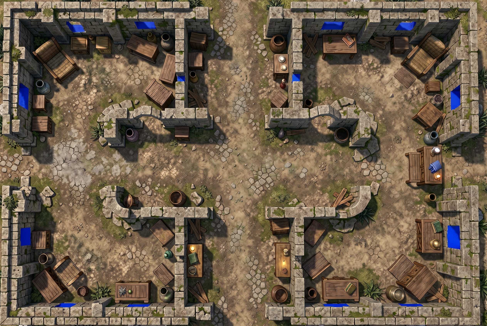

One Gemini image API request on the original courtyard map. Blue marks the returned window/slit candidates. This is the raw response, with no manual corrections and no wall openings applied.

New mask from the visible-openings prompt with no assumed symmetry.
Several returned candidates still appear on solid wall faces. Treat this as an experimental result, not an accepted set of windows.
Look at the walls of this battle map. Paint only visible window openings or viewing slits solid blue (#0000FF). Do not place windows based on assumed symmetry. Keep everything else unchanged. If none are visible, add no marks.
Window behavior agreed for integration: visibility through the opening, player movement blocked regardless of size. This test changes no movement or vision geometry.